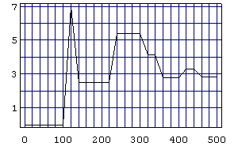

It was 1742 when Christian Goldbach wrote to Leonard Euler about his conjecture:
Goldbach would have liked Euler to demonstrate it, but Euler only simplified the conjecture and gave it the form we know nowadays:
The Goldbach's Conjecture has been checked by vector computers for all the even integers up to very high values. It is still valid and is still (1998, May) not demonstrated by mathematical means.
If we forget the case
The charm of GC basically depends on three unique factors: the reference to prime numbers, its clear structure, and the well known objects. We can put GC in a way where all its objects are explicitly defined, including prime numbers.
In this way, definition in spite of charm, the structure of GC is completely visible.
Besides, in this way a generalization is a quite natural thing.
Using
To test XGC sistematically, we need a variation of a powerful Huen Yeong Kong's idea: the sequence algebra formulation of the Goldbach Conjecture. A symbolic computer system like Mathematica can do all the tedious stuff, and all in a clear, simple, elegant and fast way. (Thanks, Huen!)
Example
{3, 5, 7, 11, 13, 17, 19, 23, 29, 31, 37, 41, 43, 47}
z3 + z5 + z7 + z11 + z13 + z17 + z19 + z23 + z29 + z31 + z37 + z41 + z43 + z47
z6 + 2 z8 + 3 z10 + 2 z12 + 3 z14 + 4 z16 + 4 z18 + 4 z20 + 5 z22 + 6 z24 + 5 z26 + 4 z28 + 6 z30 + 4 z32 + 7 z34 + 8 z36 + 3 z38 + 6 z40 + 8 z42 + 6 z44 + 7 z46 + 10 z48 + 8 z50 + 6 z52 + 10 z54 + 4 z56 + 5 z58 + 10 z60 + 3 z62 + 4 z64 + 6 z66 + 2 z68 + 4 z70 + 4 z72 + 3 z74 + 2 z76 + 4 z78 + 2 z80 + z82 + 4 z84 + z86 + 2 z88 + 2 z90 + z94
z6 + z8 + z10 + z12 + z14 + z16 + z18 + z20 + z22 + z24 + z26 + z28 + z30 + z32 + z34 + z36 + z38 + z40 + z42 + z44 + z46 + z48 + z50 + z52 + z54 + z56 + z58 + z60 + z62 + z64 + z66 + z68 + z70 + z72 + z74 + z76 + z78 + z80 + z82 + z84 + z86 + z88 + z90 + z94
{6, 8, 10, 12, 14, 16, 18, 20, 22, 24, 26, 28, 30, 32, 34, 36, 38, 40, 42, 44, 46, 48, 50, 52, 54, 56, 58, 60, 62, 64, 66, 68, 70, 72, 74, 76, 78, 80, 82, 84, 86, 88, 90, 94}
Note that step3 is not necessary if step4 is used.
Here is the formulation of XGC as a Mathematica function:
pXGC[ c_Integer, m_Integer, base_List ] := PolyToSet[ Expand[ SetToPoly[ base ]^m ] ] XGC[ c_Integer, m_Integer, base_List ] := pXGC[ c, m, base ] /; IsCoprime[ c, m ] && 0 < c < m && IsCongruent[ base, c, m ]
It gives the try of
XGC[ c_Integer, m_Integer, t_Integer ] := pXGC[ c, m, Euclid[ c, m, t ] ]
It directly gives the try of
Example
{306, 323, 340, 357, 374, 391, 408, 425, 442, 459, 476, 493, 510, 527, 544, 561, 578, 595, 612, 629, 646, 663, 680, 697, 714, 731, 748, 765, 782, 799, 816, 833, 850, 867, 884, 901, 918, 935, 952, 969, 986, 1003, 1020, 1037, 1054, 1071, 1088, 1105, 1122, 1139, 1156, 1173, 1190, 1207, 1224, 1241, 1258, 1275, 1292, 1309, 1326, 1343, 1360, 1377, 1394, 1411, 1428,
1445, 1462, 1479, 1496, 1513, 1530, 1547, 1564, 1581, 1598, 1615, 1632, 1649, 1666, 1683, 1700, 1717, 1734, 1751, 1768, 1785, 1802, 1819, 1836, 1853, 1870, 1887, 1904, 1921, 1938, 1955, 1972, 1989, 2006, 2023, 2040, 2057, 2074, 2091, 2108, 2125, 2142, 2159, 2176, 2193, 2210, 2227, 2244, 2261, 2278, 2295, 2312, 2329, 2346, 2363, 2380, 2397, 2414, 2431, 2448,
2465, 2482, 2499, 2516, 2533, 2550, 2567, 2584, 2601, 2618, 2635, 2652, 2669, 2686, 2703, 2720, 2737, 2754, 2771, 2788, 2805, 2822, 2839, 2856, 2873, 2890, 2907, 2924, 2941, 2958, 2975, 2992, 3009, 3026, 3043, 3060, 3077, 3094, 3111, 3128, 3145, 3162, 3179, 3196, 3213, 3230, 3247, 3264, 3281, 3298, 3315, 3332, 3349, 3366, 3383, 3400, 3417, 3434, 3451, 3468,
3485, 3502, 3519, 3536, 3553, 3570, 3587, 3604, 3621, 3638, 3655, 3672, 3689, 3706, 3723, 3740, 3757, 3774, 3791, 3808, 3825, 3842, 3859, 3876, 3893, 3910, 3927, 3944, 3961, 3978, 3995, 4012, 4029, 4046, 4063, 4080, 4097, 4114, 4131, 4148, 4165, 4182, 4199, 4216, 4233, 4250, 4267, 4284, 4301, 4318, 4335, 4352, 4369, 4386, 4403, 4420, 4437, 4454, 4471, 4488,
4505, 4522, 4539, 4556, 4573, 4590, 4607, 4624, 4641, 4658, 4675, 4692, 4709, 4726, 4743, 4760, 4777, 4794, 4811, 4828, 4845, 4862, 4879, 4896, 4913, 4930, 4947, 4964, 4981, 4998, 5015, 5032, 5049, 5066, 5083, 5100, 5117, 5134, 5151, 5168, 5185, 5202, 5219, 5236, 5253, 5270, 5287, 5304, 5321, 5338, 5355, 5372, 5389, 5406, 5423, 5440, 5457, 5474, 5491, 5508,
5525, 5542, 5559, 5576, 5593, 5610, 5627, 5644, 5661, 5678, 5695, 5712, 5729, 5746, 5763, 5780, 5797, 5814, 5831, 5848, 5865, 5882, 5899, 5916, 5933, 5950, 5967, 5984, 6001, 6018, 6035, 6052, 6069, 6086, 6103, 6120, 6137, 6154, 6171, 6188, 6205, 6222, 6239, 6256, 6273, 6290, 6307, 6324, 6341, 6358, 6375, 6392, 6409, 6426, 6443, 6460, 6477, 6494, 6511, 6528,
6545, 6562, 6579, 6596, 6613, 6630, 6647, 6664, 6681, 6698, 6715, 6732, 6749, 6766, 6783, 6800, 6817, 6834, 6851, 6868, 6885, 6902, 6919, 6936, 6953, 6970, 6987, 7004, 7021, 7038, 7055, 7072, 7089, 7106, 7123, 7157, 7191, 7225, 7259, 7293, 7327, 7361, 7395, 7429, 7463, 7497, 7531}
{18, 35, 103, 137, 239, 307, 341, 409, 443}
{103, 137, 239, 307, 409, 443}
{1751, 1785, 1819, 1853, 1887, 1921, 1955, 1989, 2023, 2057, 2091, 2125, 2159, 2193, 2227, 2261, 2295, 2329, 2363, 2397, 2431, 2465, 2499, 2533, 2567, 2601, 2635, 2669, 2703, 2737, 2771, 2805, 2839, 2873, 2907, 2941, 2975, 3009, 3043, 3077, 3111, 3145, 3179, 3213, 3247, 3281, 3315, 3349, 3383, 3417, 3451, 3485, 3519, 3553, 3587, 3621, 3655, 3689, 3723, 3757, 3791, 3825, 3859, 3893, 3927, 3961, 3995, 4029, 4063, 4097, 4131, 4165, 4199, 4233, 4267, 4301, 4335, 4369, 4403, 4437, 4471, 4505, 4539, 4573, 4607, 4641, 4675, 4709, 4743, 4777, 4811, 4845, 4879, 4913, 4947, 4981, 5015, 5049, 5083, 5117, 5151, 5185, 5219, 5253, 5287, 5321, 5355, 5389, 5423, 5457, 5491, 5525, 5559, 5593, 5627, 5661, 5695, 5729, 5763, 5797, 5831, 5865, 5899, 5933, 5967, 6001, 6035, 6069, 6103, 6137, 6171, 6205, 6239, 6273, 6307, 6341, 6375, 6409, 6443, 6477, 6511, 6545, 6579, 6613, 6647, 6681, 6715, 6749, 6783, 6817, 6851, 6885, 6919, 6953, 6987, 7021, 7055, 7089, 7123, 7157, 7191, 7225, 7259, 7293, 7327, 7361, 7395, 7429, 7463, 7497, 7531}
As you can see in the example above, there is a strong reason for the existence of the composite terms in a Euclid base for
pMissingTerms[ c_Integer, m_Integer, {}, {} ] := {}
pMissingTerms[ c_Integer, m_Integer, base_List, try_List ] :=
Complement[
Range[ m Min[ base ], m Max[ base ], m ],
try
]
MissingTerms[ c_Integer, m_Integer, base_List, try_List ] :=
pMissingTerms[ c, m, base, try ] /; IsCoprime[ c, m ] && 0 < c < m && IsCongruent[ base, c, m ] && IsCongruent[ try, 0, m ]
It gives the subset of the missing numbers in the try of
With this function we can reformulate the Goldbach Conjecture and the eXtended one in this way.
MissingTerms[ c_Integer, m_Integer, t_Integer ] :=
Module[ { base, try },
base = Euclid[ c, m, t ];
try = pXGC[ c, m, base ];
pMissingTerms[c, m, base, try ]
]
It directly gives the subset of the missing numbers in the try of
MissingRatio[ base_List, missing_List ] := N[ 100 Length[ missing ] / (Max[ base ] - Min[ base ] + 1) ]
It gives the percentual of missing numbers in the try of XGC using the base set.
MissingRatio[ c_Integer, m_Integer, t_Integer ] :=
Module[ { base, try, missing },
base = Euclid[ c, m, t ];
try = pXGC[ c, m, base ];
missing = pMissingTerms[c, m, base, try ];
MissingRatio[ base, missing ]
]
It directly gives the percentual of missing numbers in the try of
PlotMissingRatio[ c_Integer, m_Integer, start_Integer, stop_Integer, step_Integer ] :=
ListPlot[ Table[ {k, MissingRatio[ c, m, k ]}, {k, start, stop, step} ],
PlotJoined -> True,
PlotRange -> All,
Axes -> False,
Frame -> True,
FrameTicks -> {Automatic, Range[ 1, 100, 2]},
GridLines -> {Range[ start, stop, step ], Range[ 1, 100, 1 ]}
]
It plots MissingRatio[ c, m, k ] with k ranging from start to stop, by step.
Example
{92}
{7140, 7174, 7208, 7242, 7276, 7310, 7344, 7378, 7412, 7446, 7480, 7514}
2.8169

{1768, 1802, 1836, 1870, 1904, 1938, 1972, 2006, 2040, 2074, 2108, 2142, 2176, 2210, 2244, 2278, 2312, 2346, 2380, 2414, 2448, 2482, 2516, 2550, 2584, 2618, 2652, 2686, 2720, 2754, 2788, 2822, 2856, 2890, 2924, 2958, 2992, 3026, 3060, 3094, 3128, 3162, 3196, 3230, 3264, 3298, 3332, 3366, 3400, 3434, 3468, 3502, 3536, 3570, 3604, 3638, 3672, 3706, 3740, 3774, 3808, 3842, 3876, 3910, 3944, 3978, 4012, 4046, 4080, 4114, 4148, 4182, 4216, 4250, 4284, 4318, 4352, 4386, 4420, 4454, 4488, 4522, 4556, 4590, 4624, 4658, 4692, 4726, 4760, 4794, 4828, 4862, 4896, 4930, 4964, 4998, 5032, 5066, 5100, 5134, 5168, 5202, 5236, 5270, 5304, 5338, 5372, 5406, 5440, 5474, 5508, 5542, 5576, 5610, 5644, 5678, 5712, 5746, 5780, 5814, 5848, 5882, 5916, 5950, 5984, 6018, 6052, 6086, 6120, 6154, 6188, 6222, 6256, 6290, 6324, 6358, 6392, 6426, 6460, 6494, 6528, 6562, 6596, 6630, 6664, 6698, 6732, 6766, 6800, 6834, 6868, 6902, 6936, 6970, 7004, 7038, 7072, 7106, 7140, 7174, 7208, 7242, 7276, 7310, 7344, 7378, 7412, 7446, 7480, 7514}
49.8534
Note that the missing terms for Euclid bases are very superficial while for bases of only primes they are very deep. For example, a missing term like 1768 is so deep that it is always missing for any size of the base. Vice versa, the expansion of a Euclid base can completely replace the old missing terms with greater ones.
0
0.900901
0
0.425532